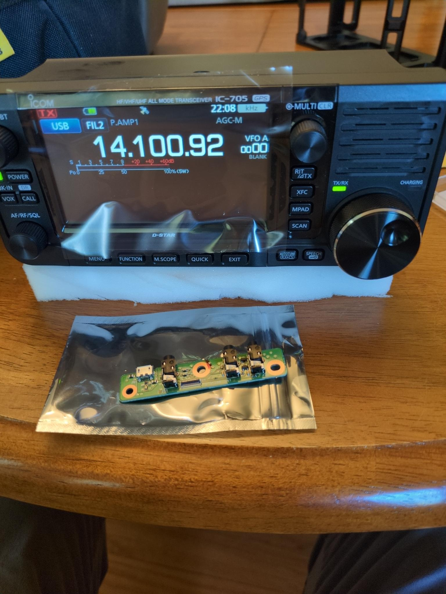
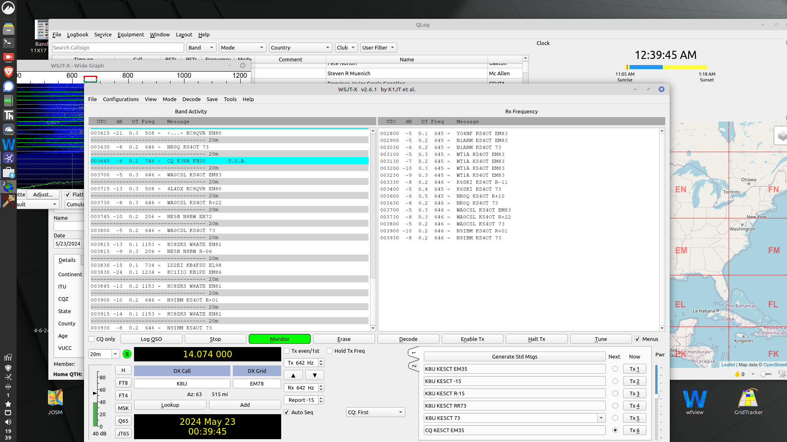

April 2026

As they used to say when I first began surfing the internet in the mid-90s: "Welcome to my little corner of the web". I registered the domain a couple of years ago, and thought I needed to do something with it.


As they used to say when I first began surfing the internet in the mid-90s: "Welcome to my little corner of the web". I registered the domain a couple of years ago, and thought I needed to do something with it.
